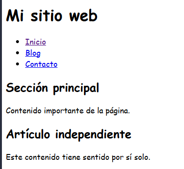
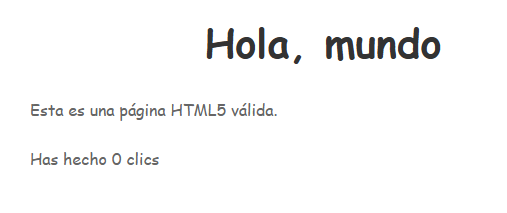
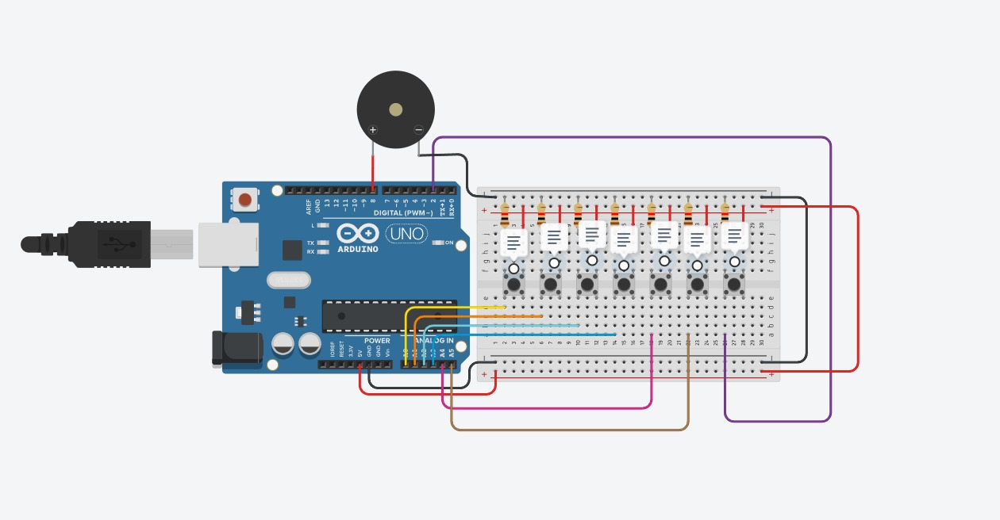

Página Web Personal
Sitio web informativo y accesible para presentar perfil profesional y proyectos destacados.
HTML5
CSS3
JavaScript
Un gran poder conlleva una gran responsabilidad
Soy ferrer y actualmente soy programador web y estudio en el cecyt No 3 una de las actividades que me gusta realizar esta el diseñar paginas web ademas de crear bases de datos en MARIA DB (Mysql),utilizar tinkercad para realizar cirucuitos electronicos en Arduino uno, Progamar y diseñar en codigo Java Script utlizando nethbeans donde utlizo herramientas tales como ciclos repetitivos, arreglos unidimensionales y la parte grafica
Y por ultimo diseño imagenes y animaciones en Opentoonz,conozco la estrucura detallada de la computadora y realizo mantenimiento preventivo y correctivo a las mismas y diseño redes de comunicaciones con el estandar del modelo OSI

Sitio web informativo y accesible para presentar perfil profesional y proyectos destacados.

Sitio web moderno enfocado en la experiencia de usuario y optimizado para dispositivos móviles.

Landing page empresarial orientada a la presentación de servicios y captura de mensajes de clientes.
Durante mi trayectoria en el área de la tecnología me he enfocado en comprender los sistemas informáticos de manera integral, abarcando desde la infraestructura física hasta el desarrollo de software y la creación digital. En el ámbito de la informática y las redes, cuento con conocimientos sólidos sobre la estructura interna de las computadoras, lo que me permite realizar labores de mantenimiento preventivo y correctivo de hardware, así como diseñar arquitecturas de redes de comunicaciones estructuradas bajo los estándares del modelo OSI.
En cuanto al desarrollo de lógica y programación, diseño e implemento aplicaciones utilizando Java y JavaScript mediante el entorno de desarrollo NetBeans, integrando lógica estructurada con ciclos repetitivos, manejo de datos mediante arreglos unidimensionales y la creación de interfaces gráficas funcionales. Asimismo, administro el almacenamiento persistente de información a través del diseño y gestión de bases de datos relacionales en MariaDB y MySQL.
Mi formación técnica se complementa con el prototipado electrónico y la creación multimedia: utilizo Tinkercad para la simulación y diseño de circuitos aplicados a microcontroladores Arduino Uno, maquetación web en HTML5 y CSS3 con control de versiones en Git y GitHub, además de la elaboración de diseños gráficos y animaciones 2D mediante la herramienta OpenToonz.
¿Probaste el sitio? Déjame tu comentario para mejorar la experiencia.